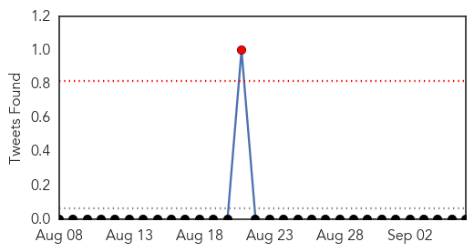

30 Day Trends
Web: 2 alerts, 0 warnings
Twitter: 1 alerts, 0 warnings
Top Articles:
- 0.983
- INGAT PO! POEA lists 9 precautions vs MERS-CoV for on-site OFWs plus 3 for returning OFWs
- 0.969
- Cebu News, The Freeman Sections, The Freeman
- 0.964
- Nurse from Saudi cleared of MERS-CoV
- 0.912
- Filipina nurse tests negative for MERS virus, ‘the Philippines remains to be MERS-CoV-free’: DOH
- 0.884
- Pilgrims urged to take necessary vaccines two weeks prior to travel
- 0.855
- Filipina nurse from Saudi tests negative for MERS
- 0.785
- Filipina nurse negative for Mers
Top Tweets:
-
No tweets found for Sep 06, 2014
Web/News Articles
Tweets
Article Locations

Article Confidences